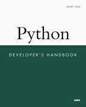

| See All Titles |
|
 Front Matter Table of Contents Index About the Author |
ISBN: 0-672-31994-2, 960 pages The Python Developer’s Handbook is designed to expose experienced developers to Python and its uses. Beginning with a brief introduction to the language and its syntax, the book moves quickly into more advanced programming topics, including embedding Python, network programming, GUI toolkits, JPython, Web development, Python/C API, and more. Python is an interpreted, object-oriented programming language. Its syntax is simple and easy to learn, and it encourages programmers to write and think clearly. The Python Developer’s Handbook is carefully written, well-organized introduction to this powerful, fast-growing programming language for experienced developers. |
| Last updated on 1/30/2002 Python Developer's Handbook, © 2002 Sams Publishing |
© 2002, O'Reilly & Associates, Inc. |